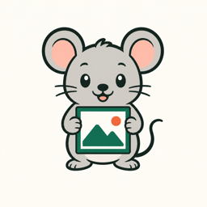

핌쥐브라우저에서만
VIDEO → APNG / GIF
동영상을 가볍게, 움직이는 이미지로
복잡한 설치 없이 파일을 고르고, 원하는 형식을 선택하면 끝이에요.
파일은 업로드되지 않아요. 변환은 이 브라우저 안에서 진행됩니다.
서버 업로드 없음계정 필요 없음브라우저에서 바로 변환
- 1. 파일
- 2. 설정
- 3. 변환
파일을 기다리고 있어요.

핌쥐VIDEO → APNG / GIF
복잡한 설치 없이 파일을 고르고, 원하는 형식을 선택하면 끝이에요.
파일은 업로드되지 않아요. 변환은 이 브라우저 안에서 진행됩니다.